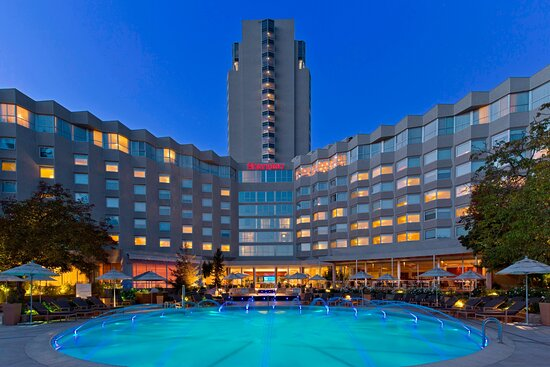
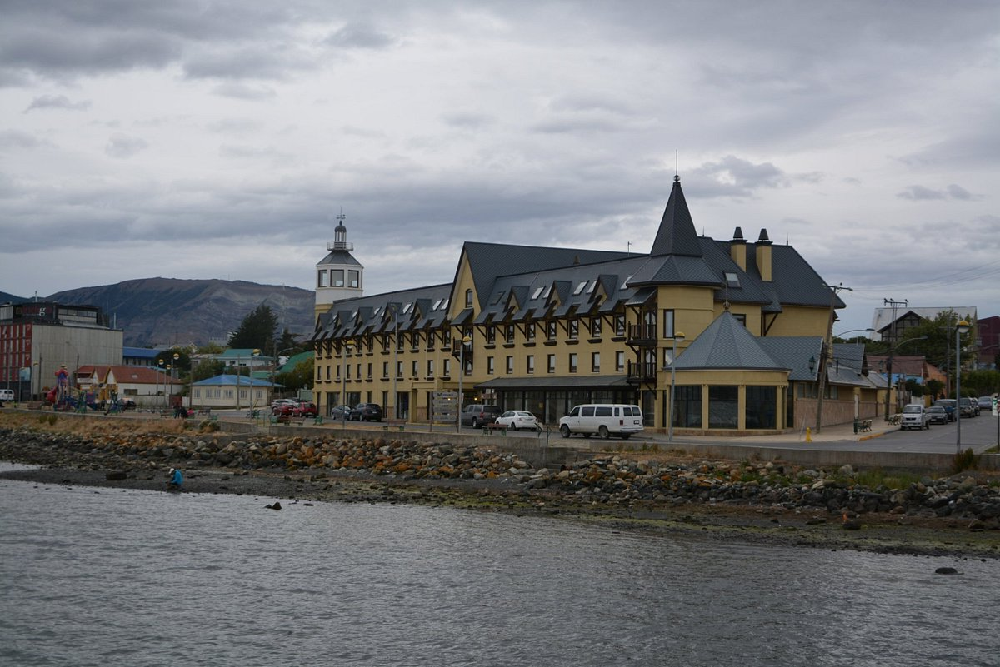

Para aquellos que estén interesados en visitar puntos de referencia conocidos durante su viaje a Santiago, Sheraton Santiago Hotel and Convention Center se encuentra cerca de Santuario de la Inmaculada Concepcion (1,1 km) y Grand Santiago Tower (1,5 km).
Las habitaciones de los huéspedes ofrecen servicios como televisor de pantalla plana, aire acondicionado y minibar, y los huéspedes pueden permanecer conectados con wifi que ofrece el hotel.
San Cristobal Tower Hotel tiene conserje para que la estancia sea más agradable. El establecimiento también cuenta con piscina y desayuno.
Santiago también se conoce por sus parques estatales, como Parque Fluvial Padre Renato Poblete y Comunidad ecológica de Peñalolén, que no se encuentran muy lejos de San Cristobal Tower Hotel.
El personal de Sheraton Santiago Hotel and Convention Center está deseando atenderte durante tu visita.

Hotel Costaustralis
Ubicado frente al fiordo de Última Esperanza, Hotel Costaustralis destaca por su tradicional edificio que se eleva como la postal de entrada a la ciudad de Puerto Natales.
En su interior se alberga la historia y tradiciones de la zona a través de un servicio cálido y personalizado junto con una decoración sobria y elegante con gran presencia de materiales de la región.
Costaustralis cuenta con 110 cómodas habitaciones diseñadas para brindar un descanso total. Ellas gozan de una impresionante vista al mar con las montañas patagónicas de fondo así como con acomodaciones de primer nivel tales como full set de almohadas, escritorio independiente, TV LCD, baño full equipado y wifi gratuito.
El Hotel también cuenta con un servicio gastronómico de alto estándar. La cocina destaca por su oferta de comida típica de la región, donde podrá degustar de la deliciosa Centolla Magallánica en su restaurant o de un típico Calafate Sour en el bar. La experiencia de Hotel Costaustralis le permitirá vivir la Patagonia desde sus raíces.

Best Western Marina Del Rey
El hotel goza de una magnífica ubicación en el centro de la ciudad y la zona de negocios de Viña Del Mar, a poca distancia a pie de las playas de Caleta Abarca, el famoso Casino Municipal, los distintos paseos peatonales, la Calle Valparaíso y la Avenida Perú.
Ofrecemos habitaciones cómodas, espaciosas y tranquilas con control climático, televisión en color por cable con CNN y películas, secador de pelo y servicio de habitaciones.
Además, el BEST WESTERN Marina Del Rey dispone de un restaurante que ofrece desayuno completo gratuito, salón, cajas fuertes, llave-tarjeta electrónica y sala de reuniones con capacidad para 500 invitados